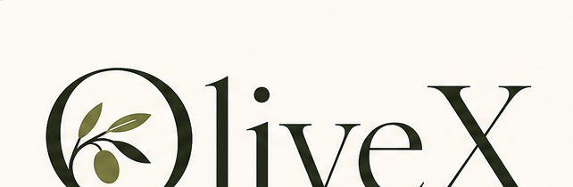
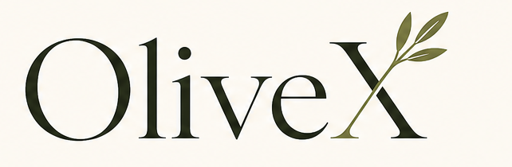
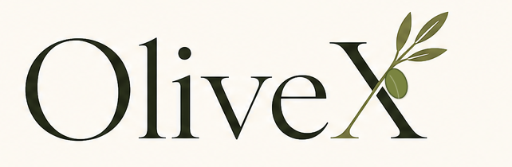
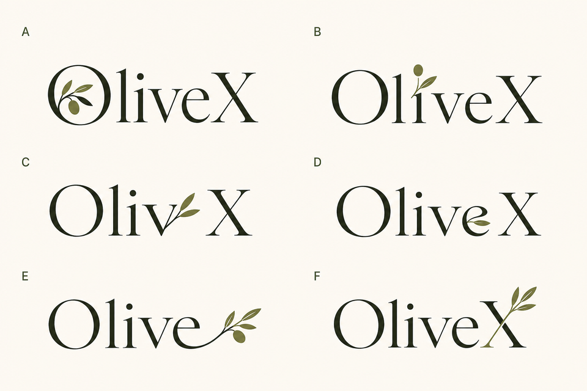

A
O-emblem
Ren og premium. Olivengrenen blir et tydelig symbol inne i O-en.

Nav-size test
OliveX logoarbeid
Jeg har fjernet de dårlige mellomvariantene. Denne previewen viser bare de to retningene som faktisk fungerer: A, F, og en F-iterasjon der grenen får en tydelig oliven.
Nåværende logo

Arbeidsregel videre
A og F er fortsatt konseptretninger, ikke ferdige logoassets. Riktig neste steg er å velge mellom O-emblem og X-gren, deretter fintegne vektorlogoen med riktig typografisk vekt, spacing og optisk balanse.
Ren og premium. Olivengrenen blir et tydelig symbol inne i O-en.

Den sterkeste idéen hvis målet er å gjøre X-en til en egen signatur.

Samme F-retning, men med én tydelig oliven slik at grenen ikke bare leses som blader.

Kildeboard
